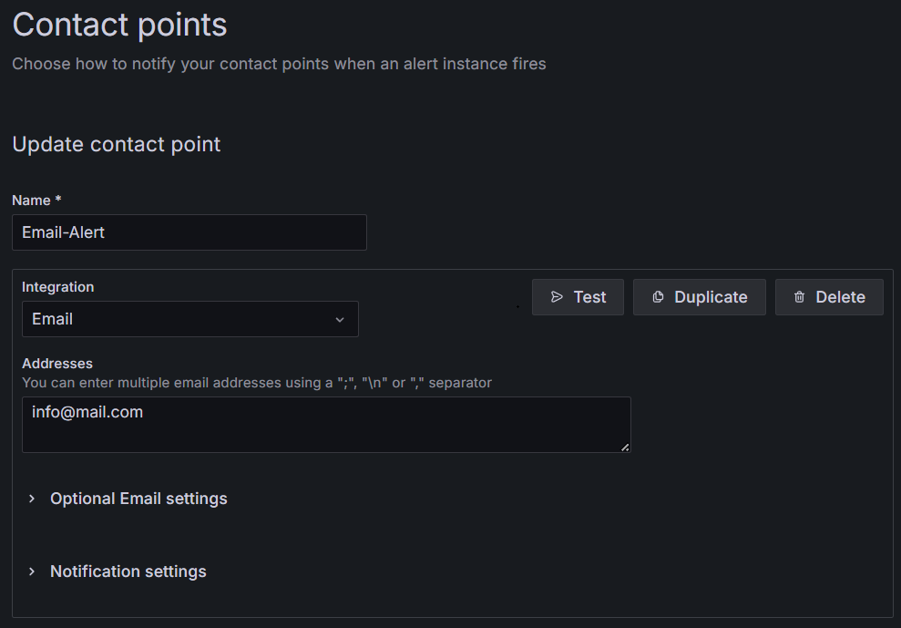
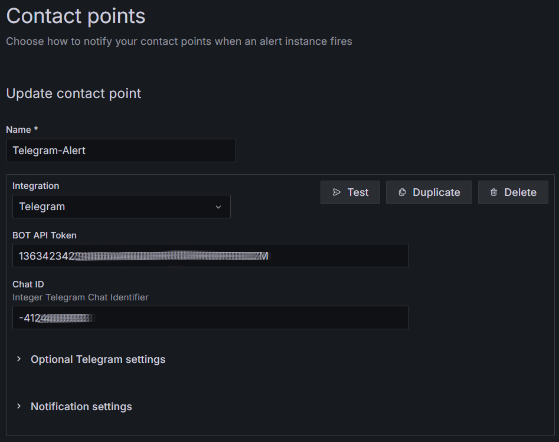
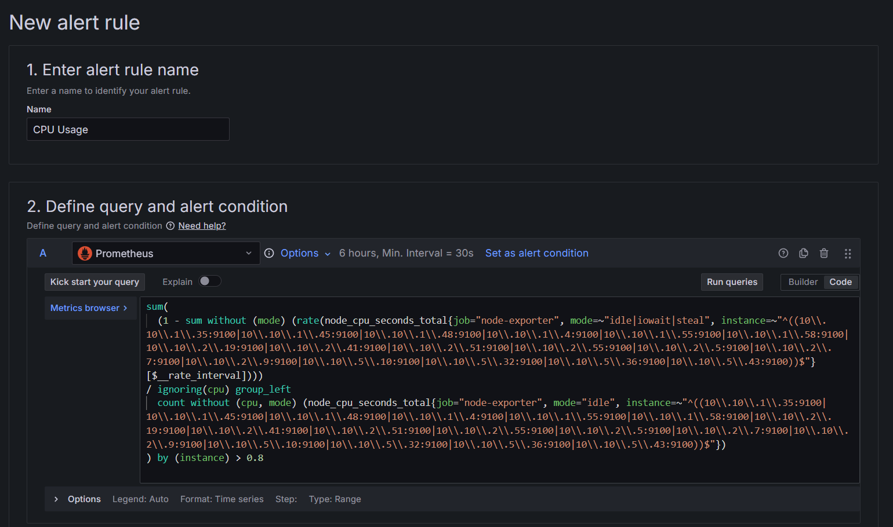
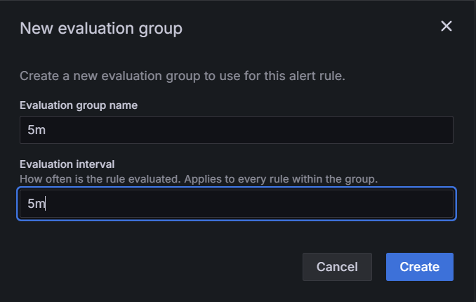
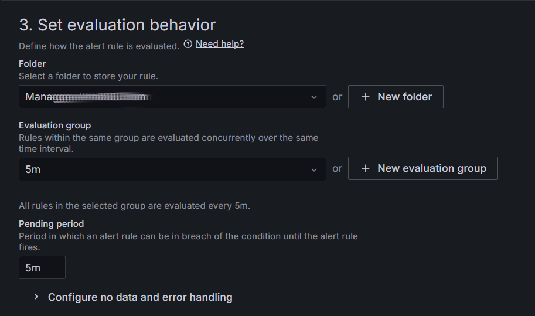
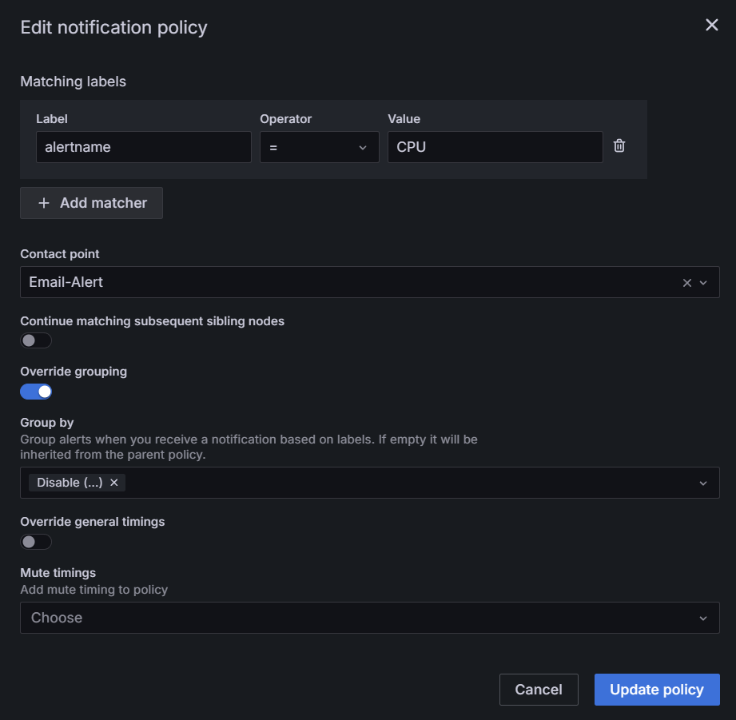
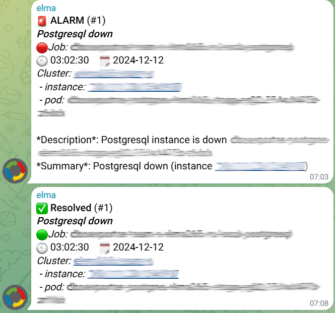

To monitor the key performance indicators of the system, install the Grafana tool. After that, you can set up notifications to email or messenger. This will help you respond to errors and take measures to eliminate them.
There are several ways to configure alerts with Grafana:
- Manually create alerting rules and configure notifications to be sent via email or messenger.
- Use a ready-made list of rules and customize notifications to be sent to a messenger.
Create alert rules and configure their routing
Setting up notifications and alerts in Grafana consists of three steps:
Step 1. Configure how notifications are received
In Grafana settings, go to Alerting > Contact points, and in the Integration field, specify how you want to receive notifications, and then fill in the appropriate fields.
To receive notifications via email, select the Email option. Then, in the appeared Addresses field, specify a list of email addresses where notifications will be sent.

To receive notifications via Telegram, select the appropriate option in the Integration field. After that, the BOT API Token and Chat ID fields will appear. To fill them in, follow the steps below:
- Go to Telegram and create a bot.
- Copy the bot token and enter it in the BOT API Token field.
- Create a group in Telegram and add your bot to it.
- Obtain the group ID and enter it in the Chat ID field.
Use the official documentation to perform actions in Telegram.

Step 2. Create alert rules
Based on metrics using Prometheus or tracking logs using Loki, you can create alert rules.
For this example, let’s create a metrics-based alert rule using the overview dashboard and configure notifications when the CPU load on a node exceeds 80% for 5 minutes. To do this, open the required section in the dashboard, in our case, it is Nodes info. Then in the upper right corner, click on the three dots and select More > New alert rule. In the window that opens, perform the following steps:
- In the Name field, enter the name of the alert rule, for example, CPU Usage. The second item will automatically display the rule script. At the end of the script text, set the threshold value for triggering the rule to > 0.8.

- Next, in the same window, create a new evaluation group with a value of 5m and give it a name. Then the alert will be received if the CPU load exceeds 80% for the whole specified time.

- In the same window in the Folder field, select a folder where alerts on the created rule will be saved and displayed. In the Evaluation group field, add the previously created evaluation group 5m.
Additionally, in the New alert rule window, you can add labels and annotations for your alert rule. Labels help you categorize and filter alerts, while annotations allow you to add a description of the problem or action to be taken.

Step 3. Set up notification routing
Go to Alerting – Notification policies. In the opened window:
- Fill in Matching labels fields.
- In the Contact point field, select how you want to receive notifications.
Example of filling in:

Routing is configured. If the threshold value exceeds the 0.8 factor for 5 minutes, a notification will be sent to the specified email address.
Apply a ready-made list of rules for notifications to messengers
The elma365/monitoring chart contains a list of rules for alerts defined in the alerts.yaml file. It can be applied only for sending notifications to messengers.
By default, the configuration file specifies parameters for routing messages to the most common service, which is Telegram.
To use a ready-made list with another messenger, you can change the configuration in the alerts.yaml file and set the notification routing and templates for the required messenger.
If a ready-made list of rules in the alerts.yaml file is not enough, you can create rules manually and configure their routing according to the instructions above.
Let’s see how to use the ready-made list of rules and send alerts to Telegram:
- Before setting up alerts, make sure you have installed monitoring tools and DBSExporter to monitor databases with Node Exporter enabled.
- To set up a ready-made list of notification rules over the web, get the
values.yamlconfiguration file by executing the following command:
helm repo add elma365 https://charts.elma365.tech
helm repo update
helm pull elma365/monitoring --untar
- In the
alerts.yamlfile, configure the alerting channel. To do this, specify the following:
- bottoken: <bot-token>. Telegram bot token.
- chatid: "<chat-id>". Chat identifier in Telegram.
# Alerting settings
kube-prometheus-stack:
grafana:
alerting:
contactpoints.yaml:
apiVersion: 1
contactPoints:
- orgId: 1
name: telegram-message-node
receivers:
- uid: telegram-message-node
type: telegram
settings:
bottoken: <bot-token>
chatid: "<chat-id>"
message: '{{ "{{" }} template "telegram.node" . {{ "}}" }}'
parse_mode: HTML
disableResolveMessage: false
- Apply the prepared alerting list from the
alerts.yamlfile by executing the following command:
helm upgrade --install elma365-monitoring elma365/monitoring -f values.yaml -f alerts.yaml -n monitoring --create-namespace
Telegram alerts may look like this:

Found a typo? Select it and press Ctrl+Enter to send us feedback